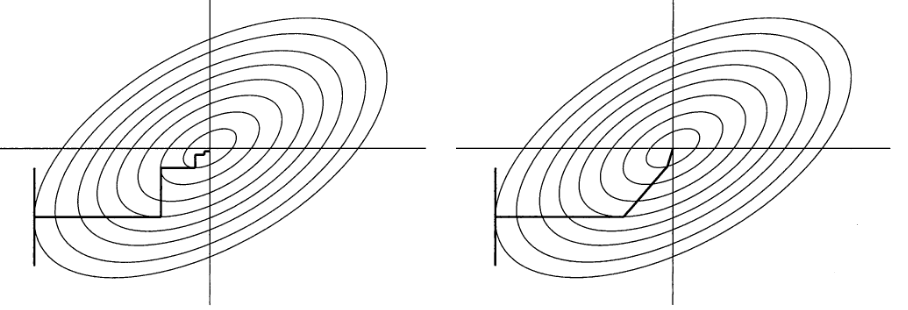

Ders 2.19
Eşlenik Gradyan (Conjugate Gradient) Yöntemi
Arnoldi metotu Gram-Schmidt'e benzeyen bir yöntemdir ve bir dikgen baz ortaya çıkartır. Bu baz, Krylov altuzayının bazidir, ki bu altuzaydaki her yeni baz vektör, $e$'nin başka bir üstü alınıp çarpılarak elde edilir. Fakat bu pek iyi bir baz değildir, bazların dikgenleştirilmesi gerekir, ve Arnoldi'nin yaptığı budur.
Arnoldi-Lanczos yöntemi özdeğerler (eigenvalue) bulmak için de kullanılır.
$$ AQ = QH $$
eşitliğindeki $H$ matrisinin alt-matrisine bakılırsa, aranılan özdeğerler buradan okunabilir. Bu alt-matris simetrik ve üst köşegendir. (upperdiagonal).
$$ H = Q^{-1}AQ $$
formülünde $H,A$ matrisleri birbirine benzerdir (similar) ve benzer matrislerin özdeğerleri aynıdır.
Bu kavramlardan şöyle bir bahsetmek istedim, belki günün birinde çok büyük
bir matrisin özdeğerlerini bulmak gerekir, akılda olsun. Yazılım
arpack bunun için kullanılabiliyor. Bahsi yaptık bir diğer sebep
lineer cebirin yarısı lineer sistemlerse, diğer yarısı özdeğer
problemleridir denebilir. Buraya gelmişken üstteki özdeğer yönteminden
bahsetmemek olmazdı.
Konumuza dönelim.
$A$ pozitif kesin ve simetrik olmalı. Eğer değilse birazdan gösgtereceğimiz formülleri kullanmak biraz riskli olur, işleyebilirler ama garanti olmaz.
$r_K = b - Ax_k $, $K_k$'ye dikgen, $x_k \in \mathscr{K}_K$.
Demek ki $x_k$'yi özyineli olarak yaratabiliriz, ve her adımda sadece $A$ ile çarpmamız gerekir. Üstteki formülde $A$ ile çarpım olduğuna göre, $r_K$ bir sonraki uzay $k+1$ içinde olacaktır. Arnoldi'den biliyoruz ki $q_{k+1}$ aynı uzay içindedir. O zaman
$r_k$, $q_{k+1}$'in bir katıdır. Yani $r$ ile gösterilen "artıklar (residuals)" birbirine dikgen. Yani
$$ r_i^Tr_k = 0, \ i < k $$
Artıkların birbirine dikgen olmasının sebebi içlerinde $A$ olması.
Başlangıç değerleri
$$ d_0 = b $$
$$ x_0 = 0 $$
$$ r_0 = b - Ax_0 = b$$
Simetrik Pozitif Kesin $A$ İçin Eşlenik Gradyan Metodu
Algoritma eslenik_gradyan
- $\alpha_k = r_{k-1}^T r_{k-1} / d_{k-1}^T A d_{k-1}$
- $\alpha_k = \alpha_{k-1} + \alpha_k d_{k-1}$
- $r_k = r_{k-1} - \alpha_k Ad_{k-1}$
- $\beta_k = r_k^Tr_k / r_{k-1}^Tr_{k-1}$
- $d_k = r_k + \beta_k d_{k-1}$
$d$ "arama yönüdür", optimizasyon ilerlerken gideceğimiz istikamettir. 2. adımda güncellemeyi yapıyorum. Peki bir sonraki yönüm ne olmalı?
Her Döngüde:
- $Ad$ çarpımını görüyoruz, çünkü $A$ ile çarpım bize yeni Krylov altuzayını veriyor.\\
- 2 içsel çarpım \\
- 2 ya da 3 vektör güncellemesi
Peki $k$ adım sonra hata $||e_k||$ nedir ve ilk baştaki hata $||e_0||$ ile bağlantısı nedir?
$$ ||e_k|| \le 2 \bigg( \frac{ \sqrt{ \lambda_{maks} - \lambda_{min}}} {\lambda_{maks} + \lambda_{min}} \bigg)^k||e_0|| $$
Hala bir kelimeye açıklık getirmedik; gradyan. Niye bir "gradyan" kelimesi kullanıyoruz, neyin gradyanından bahsediyoruz, bu teknik için gradyanlar ne anlama geliyor?
Lineer problemlerde $Ax = b$ eşitliği vardır ve bu eşitlik enerjinin gradyanından gelir. Yani
$$ E(x) = \frac{ 1}{2}x^TAx - b^Tx $$
enerjisinin gradyanından. Üstteki formül nereden geldik diye düşünebilirsiniz, hep lineer sistemlerden bahsettik, ve bu sistemlerde her şey $Ax = b$ formatına uyar. Şimdi birdenbire matematiğin farklı bir koluna geçiyorum sanki, üstteki formülü minimize etmeye uğraşıyorum, yani optimizasyona giriyorum. Fakat cebirsel olarak düşünürsek,
$$ grad \ E = [\frac{\partial E}{\partial x} ] = Ax - b $$
olacaktır. Minimumda üstteki sıfır olacağına göre
$$ Ax - b = 0 $$
$$ Ax = b $$
Yani karesel enerjinin lineer gradyanı vardır, ve onun minimumu $Ax = b$'dir. Bu demektir ki lineer denklemi çözmek ve enerjiyi minimize etmek aslında aynı şeydir! Minimum kelimesini kullanabiliyorum bu arada, çünkü $A$'nin pozitif kesin olduğunu biliyorum.
Minimize işlemi nasıl yapılır? Diyelim ki alttaki gibi bir $E(x)$'im var, kap şeklinin herhangi bir noktasındayım, ve aşağı inmem lazım. En fazla artış gradyan $g$ ise, dibe inmek için $-g$ yönünde gidebilirim.
Bu yön doğal bir yöndür, ilk akla gelen fikirdir ve mantıklıdır. Fakat en iyi yön değildir. Şimdi minimizasyon çözümü olarak eşlenik gradyan açısından bakıyoruz olaya, işin gradyan tarafı da böylelikle açıklığa kavuşacak.
Negatif gradyanın aynı zamanda artığın da (residual) negatif yönüdür. Artığın yönünde hareket etmek iyi midir? Negatif gradyanı takip etmenin bir diğer ismi "en dik iniş (steepest descent)"tir. Fakat, başlangıç noktasına göre bu değişir ama, çok fazla iniş çıkış ta yaşanabilir.
$r$'ler hesapsal bilimde çok aranan bir özelliğe sahip değildir, dikgenlik. Bir şekilde dikgenlik her zaman doğru yönde hareket ettiğimizin garantisidir. Gidilmesi gereken doğru yön, üstteki kodda 5. satırda hesaplanan yöndür. Bu yöne "$A$-dikgen" denir.
Bir resimle göstermek gerekirse, alta bakalım, soldaki en dik iniş, sağdaki eşlenik gradyan. Enerji fonksiyonunu kesit seviyesinden (level set), kontur (contour) olarak gösteriyoruz, her kontur bir enerji seviyesine tekabül edecek, mesela en dıştaki kontur 5, bir içerideki 4 olabilir, ve en ortadaki nokta tam sıfır olabilir, çünkü en düşüktür.

Her iki tekniğin gidişatı resimde görülmektedir.
[gerisi atlandı]
Ekler
Üstteki anlatımda Krylov altuzaylarının eşlenik gradyan metotunun işleyişinde tam olarak nasıl rol oynadığı belirtilmemiş. Aslında Krylov altuzayları gerektirmeden bu metotu anlatmak mümkün.
İki vektör $u,v$ birbirine A-dikgendir eğer
$$ u^TAv = 0 $$
işe. Dikkat, bu iki vektör, tek başlarına, $u^Tv$ olarak birbirine dikgen olmayabilir, ama ortada $A$ olduğu halde çarpım sıfır çıkarsa dikgen olmasalar da A-dikgen olurlar. Bu dikgenliğin bir diğer ismi eşlenik (conjugate) olmaktır.
Şimdi diyelim ki elimizde herbiri birbirine dikgen olan $n$ tane ${d_k}$ yönü / vektörü var. O zaman $d_k$ $\mathbb{R}^n$ için bir baz oluşturur ve biz de $Ax = b$ denkleminin çözümü $x_$'i bu bazı temel alarak temsil ederiz. Yani baz vektörlerini çarpan bazı katsayılar vardır, ve bu çarpımların toplamı $x_$ olur.
$$ x_* = \sum_{ i=1}^{n} \alpha_i d_i $$
Böylece $Ax = b$'yi çözmek için bir metot elde ediyoruz, eğer $n$ tane eşlenik yön bulabilirsek, $\alpha$ değerlerini hemen hesaplayabiliriz. Ayrıca eğer eşlenik vektörler $d_k$'leri dikkatlice seçersek, yaklaşık çözüm $x_*$ için hepsine ihtiyacımız olmaz. Özyineli $x$ formülünü kullanabiliriz,
$$ x_{k+1} = x_k + \alpha_k d_{k+1} \qquad (1) $$
Bu formül niye mantıklı? Eğer çözüm $x_*$ dikgen $d_k$ vektörlerinin bir lineer kombinasyonu ise, çözüm vektörleri birbiri ardına dizilmiş ve "bir yere giden" bir zincir olarak görülebilir. Üstteki formül sadece bu zinciri yavaş yavaş kurmakta..
İlk önce özyineli olarak artıklar $r_k$ arasında bir ilişki kuralım, (1)'nin iki tarafı $A$ ile çarpıp, $b$'den çıkartalım (çünkü $r_i = b - Ax_i$'a erişmek istiyoruz),
$$b - A x_{k+1} = b - A x_k + \alpha_k A d_{k} $$
$$r_{k+1} = r_k + \alpha_k A d_{k} $$
$$ r_{k+1} = r_k + \alpha_k A d_{k} \qquad (8) $$
Şimdi hata terimini hesaplayalım. $e_i$, yani $i$'inci tahminin hatası,
$$ e_i = x - x_i $$
İki tarafı $A$ ile çarpalım
$$ Ae_i = Ax - Ax_i $$
$$ Ae_i = b - Ax_i $$
Sağ taraf $r_i$ tanımının aynısı değil mi? O zaman
$$ Ae_i = r_i \qquad (5) $$
$e$'yi özyineli olarak temsil etmek te mümkündür, (1)'nin her iki tarafından $x$ çıkartırsam,
$$ x_{k+1} - x = x_k - x + \alpha_k d_{k} $$
$$ e_{k+1} = e_k + \alpha_k d_k \qquad (2) $$
Bu her adımı $\alpha_k$'ye bağlı özyineli bir tanımdır.
$\alpha$ katsayılarını bulmak için bir sonraki yönden gelen hatanın önceki tüm arama yönlerine, özelde bir önceki arama yönüne A-dikgen olmasını istiyoruz. Yani
$$ d_i^TA e_{i+1} = 0$$
olmalı.
$$ d_i^TA (x_{i+1}-x) = 0$$
$$ d_i^TA (x_{i} + \alpha_i d_i -x) = 0$$
$$ d_i^TA (e_i + \alpha_i d_i ) = 0$$
$$ d_i^Tr_i + \alpha_i d_i^TA d_i = 0$$
$$ \alpha_i = -\frac{ d_i^Tr_i}{d_i^T A d_i} \qquad (6) $$
Şimdi hata terimine dönelim, diyelim ki $e_0$ vektörü, bu vektör, diğer her vektör gibi içinde olduğumuz uzayın bazlarının bir kombinasyonu olarak temsil edilebilir. Bizim bazlarımız $d_j$ olduğuna göre,
$$ e_0 = \sum_{ j=0}^{n-1} \delta_j d_j $$
Katsayı olarak $\delta_j$ seçtik, $\alpha$ ile karışıklık olmasın diye. Şimdi iki tarafı $d_k^T A$ ile çarpalım,
$$ d_k^T A e_0 = \sum_{ j=0}^{n-1} \delta_j d_k^T A d_j $$
Yine aynı dikgenlik numarası, toplam içinde $j$ olmayan tüm diğer $p$ çarpımları sıfırdır,
$$ d_k^T A e_0 = \delta_j d_j^T A d_j $$
$$ \delta_j = \frac{ d_k^T A e_0}{ d_j^T A d_j } \qquad (4) $$
Şimdi $e_0$'in yerine (2)'teki özyineli tanımdan türeteceğim bir şey koymak istiyorum. Diyelim ki $e_0$'dan başlayıp teker teker bir sonraki $e$'yi hesaplayıp alt alta yazdım, ve topladım
$$ \cancel{e_{1}} = e_0 + \alpha_0 d_0$$
$$ \cancel{e_{2}} = \cancel{e_1} + \alpha_1 d_1$$
$$ ... $$
$$ e_{k} = \cancel{e_{k-1}} + \alpha_{k-1} d_{k-1}$$
Sağ kalan tek terimler
$$ e_k = e_0 + \sum_{ j=0}^{k-1} \alpha_j d_j $$
(4) içinde $e_0$ yerine koyalım
$$ \delta_j = \frac{ d_k^T A e_k - \cancel{\sum_{ j=0}^{k-1} \alpha_j d_k^T A d_j}} { d_j^T A d_j } $$
Niye iptal? Yine A-dikgenliği. Dikkat edilirse $j$'ler $k-1$'e kadar çıkıyor, $k$'ye bile erişmiyor, çarpım hep sıfır. Kalanlar,
$$ = \frac{ d_k^T A e_k} { d_j^T A d_j } $$
(5)'i kullanırsak,
$$ \delta_j = \frac{ d_k^T r_k} { d_j^T A d_j } $$
(6) ile bu formülün benzerliği bariz, sadece eksi işareti farklı. O zaman
$$ \delta_k = -\alpha_k $$
diyebiliriz. Bu demektir ki hata formülünde $\alpha$ yerine $\delta$ kullanabiliriz,
$$ e_0 = -\sum_{ j=0}^{n-1} \alpha_j d_j $$
Hataların özyineli denklemi (2)'yi üste uygularsak,
$$ e_i = -\sum_{ j=i}^{n-1} \alpha_j d_j \qquad (3) $$
Şimdi artıkların ve önceki gidiş yönlerinin dikgen olduklarını gösterelim. (3)'u $d_k^TA$ ile çarpalım,
$$ d_k^TAe_i = -\sum_{ j=i}^{n-1} \alpha_j d_k^TAd_j $$
$$ d_k^Tr_i = -\sum_{ j=i}^{n-1} \alpha_j d_k^TAd_j $$
$d$'ler arasındaki A-ortogonallik sayesinde ve $k < i$ için
$$ d_k^Tr_i = 0 \qquad (9) $$
Madem ki eski yönler ve artıklar birbirine dikgen, Gram-Schmidt işleminin A-dikgen halini artıklardan yön üretmek için kullanabiliriz. Her artığı alıp, içinden ona dikgen bir yön çıkartmak mümkün.
$$ d_i = r_i + \sum_{ j=0}^{i-1} \beta_{i,j}d_j \qquad (10) $$
$$ \beta_{i,j} = - \frac{ r_i^TAd_j}{d_j^TAd_j} $$
Yani Gram-Schmidt formülasyonunun A-dikgenlik kullanan hali (bkz Lineer Cebir Ders 17 notları). Ama üstteki ifadeyi daha da basitleştirebiliriz, ve verimli hale getirebiliriz. Üstteki yöntemde tüm vektörleri etrafta tutmamız gerekiyor, ayrıca $A$'lardan kurtulmak iyi olur.
Kurtulmak için $r_i^TAd_j$ ifadesine içinde ulaşmaya çalışacağız, ve eşitliğin diğer tarafında içinde $A$ olmayan bir ifade olmasına gayret göstereceğiz. $r_i^Tr_{j+1}$ ile başlayalım, ve $r_{j+1}$ üzerinde özyineli denklem (8)'i uygulayalım.
$$ r_i^Tr_{j+1} = r_i^T (r_i + \alpha_k A d_k) = r_i^Tr_j + \alpha_i r_i^TAd_j $$
$$ = \frac{ r_i^Tr_{j+1} - r_i^Tr_j }{\alpha_j} = r_i^TAd_j $$
Eşitliğin sağındaki ifadenin $\beta_{i,j}$ ifadesinin bölünen kısmı ile aynı olduğuna dikkat, ve eşitliğin sol tarafında $A$ yok. Yerine koyalım,
$$ \beta_{i,j} = - \frac{ 1}{\alpha_j}\frac{ r_i^Tr_{j+1} - r_i^Tr_j }{d_j^TAd_j} $$
$j = i -1$, yani $\beta_{i,i-1}$ için
$$ \beta_{i,i-1} = - \frac{ 1}{\alpha_{j-1}}\frac{ r_i^Tr_i }{d_{i-1}^TAd_{i-1}} $$
$r_i^Tr_j$ terimi $r_i^Tr_{i-1}$ olunca sıfır oldu, çünkü artıklar birbirine dikgen. Dikkat bu sefer dikgen, A-dikgen değil. Bunu nasıl ispat ederiz? (10)'u alıp $r_k$ ile çarpalım, ve $k,i$ indislerini değiştirelim
$$ d_k^Tr_i = r_k^Tr_i + \sum_{ j=0}^{i-1} \beta_{k,j}d_j ^Tr_i = 0 $$
Sıfıra eşitlik (9) sayesinde. Ama bu sıfır durumu toplam içindekiler için de geçerli, çünkü toplamın üst sınırı $i-1$, ve en yüksek indisli yön $d_{j-1}$ olabilir, o zaman toplam da sıfırdır. Yani
$$ r_k^Tr_i = 0 $$
$\beta$ ile işimize devam edelim. Bölen kısmında hala bir $A$ var, onu yokedelim. Önce (6)'daki $\alpha$ tanımının $i-1$ indisli haline bakalım, ve tersine çevirelim,
$$ \frac{ 1}{\alpha_{i-1}} = -\frac{d_{i-1}^T A d_{i-1} }{d_{i-1}^Tr_{i-1}} $$
Son $\beta$ formülünde yerine koyalım
$$ \beta_{i,i-1} = \frac{ r_i^Tr_i }{ \cancel{d_{i-1}^TAd_{i-1}}} \frac{\cancel{d_{i-1}^T A d_{i-1}}}{d_{i-1}^Tr_{i-1}} = \frac{ r_i^Tr_i }{d_{i-1}^Tr_{i-1}} $$
Son bir eşitlik daha var, bu da $d_{i-1} = r_{i-1}$ eşitliği, nereden geliyor? $j < i-1$ için $r_i^Tr_{j+1}$ ve $r_i^Tr_{j}$ çarpımlarının ikisi de sıfırdır, o zaman (10) formülü
$$ d_i = r_i + \beta_{i,j}d_j $$
haline gelir çünkü pek çok değer için $\beta_{i,j} = 0$ olacaktır. Şimdi üsttekini bir önceki indis değerleri için tekrar yazalım,
$$ d_{i-1} = r_{i-1} + \beta_{i-1,i-2}d_{i-2} $$
Yine dikgenlik sayesinde $\beta$ değeri iptal olur, ve geriye sadece
$$ d_{i-1} = r_{i-1} $$
kalır. Böylece son formül
$$ \beta_{i,i-1} = \frac{ r_i^Tr_i }{r_{i-1}^Tr_{i-1}} $$
haline geliyor, ve kodlama çok temizleşiyor.
import scipy.linalg as lin
A = np.array([[6.,1.,1.],
[1.,7.,1.],
[1.,1.,8.]])
b = np.array([1.,1.,1.])
xreal = lin.solve(A, b); print "solution", xreal
p = b
r = b
x = b*0;
r2 = np.dot(r.T,r)
for i in range(5):
Ap = np.dot(A,p)
alpha = r2 / np.dot(p.T,Ap)
x = x + np.dot(alpha,p)
r = r-np.dot(alpha,Ap)
r2old = r2
r2 = np.dot(r.T,r)
beta = r2 / r2old
p = r + np.dot(beta,p)
print x
solution [ 0.13249211 0.11041009 0.09463722]
[ 0.11111111 0.11111111 0.11111111]
[ 0.13125 0.1125 0.09375]
[ 0.13249211 0.11041009 0.09463722]
[ 0.13249211 0.11041009 0.09463722]
[ 0.13249211 0.11041009 0.09463722]
Yukarı